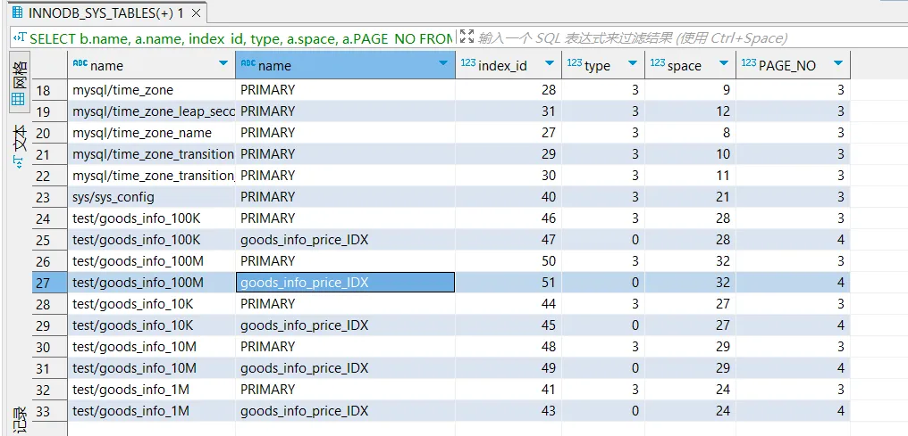
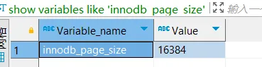
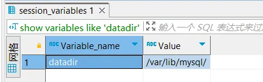
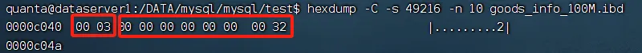
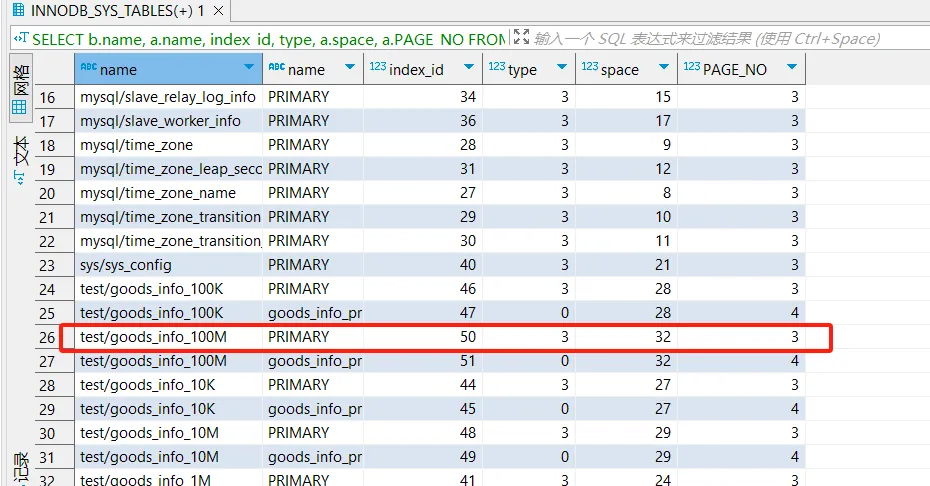

索引树高度计算 #
基本原理 #
Innodb是索引组织表，每个页都包含一个PAGE_LEVEL，表示当前页在索引上的高度
默认叶子节点高度为0，ROOT节点PAGE_LEVEL+1就是这棵索引高度
PAGE_LEVEL在每个页的64位偏移位置，占用2字节
找到ROOT页位置，知道单页大小，使用hexdump在指定表空间找到第PAGE_NO页的64位偏移量的后两个字节即可
找到ROOT页信息 #
SELECT b.name, a.name, index_id, type, a.space, a.PAGE_NO FROM information_schema.INNODB_SYS_INDEXES a, information_schema.INNODB_SYS_TABLES b WHERE a.table_id = b.table_id AND a.space <> 0;
结果：  其中（space、PAGE_NO）指向ROOT页
space是表空间，可以是系统表空间（如ibdata1文件）或独立表空间（如每个InnoDB表的.ibd文件）。表空间由多个区（extent）组成，每个区包含连续的页（page）
也就是ROOT页是space的page_no页
查看innodb_page_size #
show variables like 'innodb_page_size'
结果： 
也就是Innodb默认的页大小16KB
找到ROOT的PAGE_LEVEL，得到索引高度 #
首先要找到表对应的ibd文件，也就是表空间文件
所在位置是MySQL的数据目录下的数据库名文件夹下
#查找MySQL数据目录
show variables like 'datadir'

我的MySQL是用Docker起的，docker中没有安装hexdump命令，不过这个目录被挂载出来了，考虑在宿主机上分析其中的ibd文件
但所在文件夹和文件权限限制了宿主机外用户访问文件夹和文件 修改权限需要到docker容器中修改该文件和对应文件夹权限
chmod 755 path
原本权限为750，禁止其他用户读写文件夹
修改后在宿主机进入文件夹中，找到所需文件，在文件夹执行命令
hexdump -C -s 49216 -n 10 goods_info_100M.ibd

前两个字节是PAGE_LEVEL，所以这个索引树高度为3+1 = 4
后面8个字节是index_id，32十六进制转10进制就是50，49216 = 16384*3 + 64，是ROOT页在PAGE_NO=3的索引树

总结 #
关键命令：
hexdump -C -s [innodb_page_size*PAGE_NO + 64] -n 10 [ibd filename]